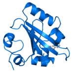
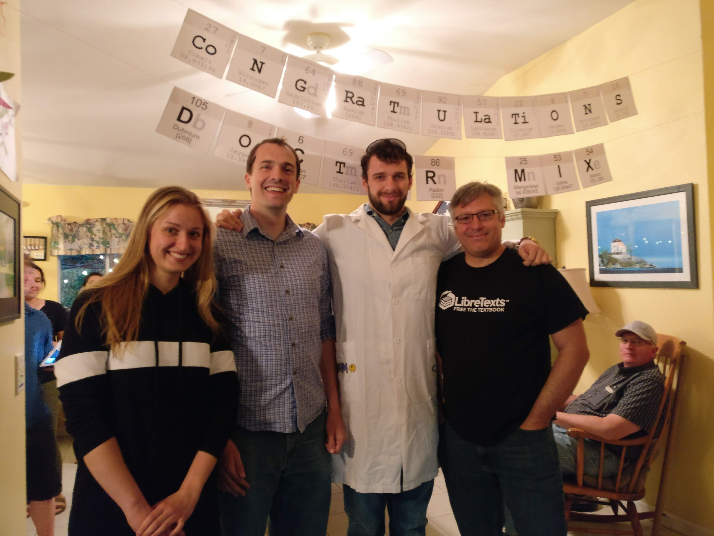

Our laboratory is located in the Chemistry department at UC Davis. Our research extends across many scientific disciplines including biophysics, physical chemistry, molecular biology and computational modeling, where the common thread among these different scientific areas of study is the investigation and characterization of rapid condensed phase dynamics.
Research People Publications Links SoftwareSupport for our research comes from Department of Energy, National Science Foundation, Human Frontiers Science Foundation, the American Chemical Society- Petroleum Research Fund and intramural support form the University of California, Davis.